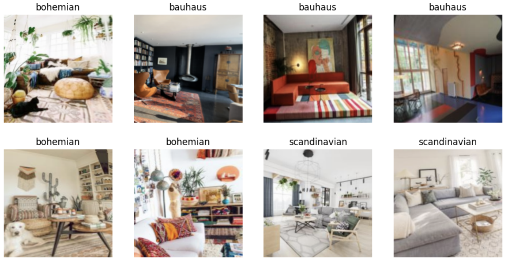
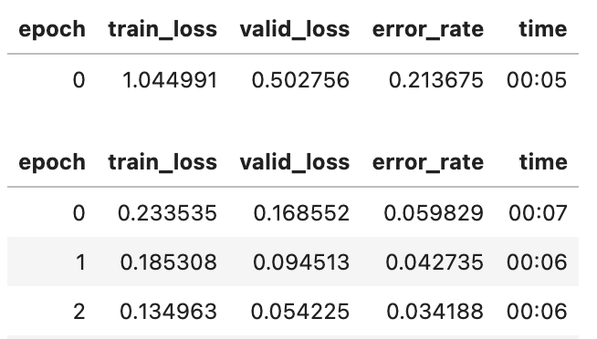
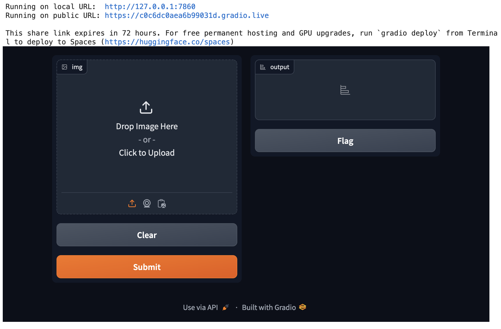
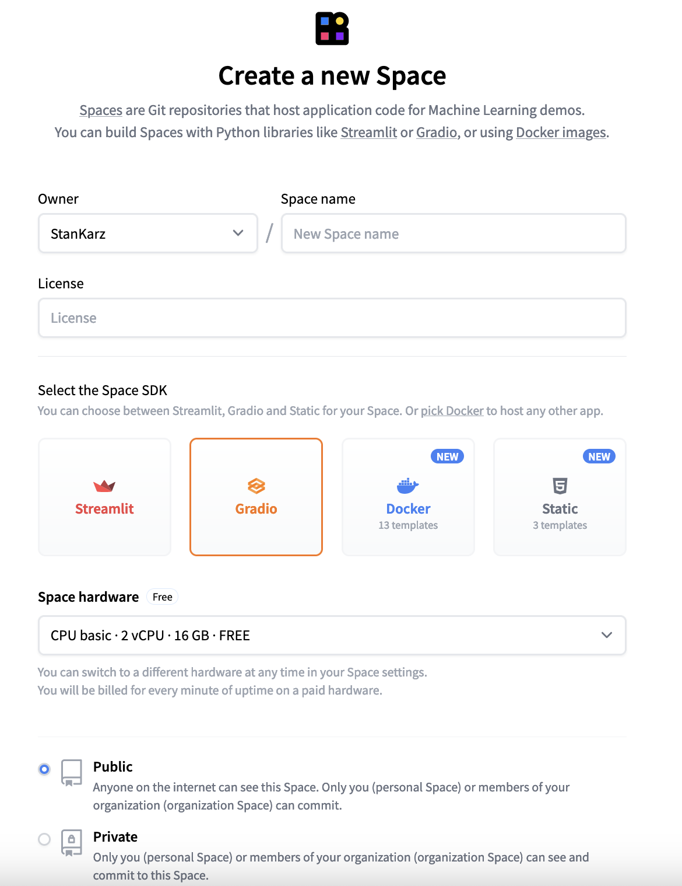
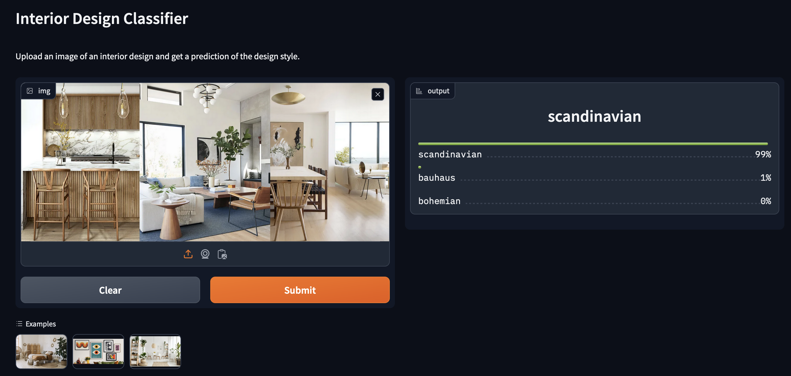

Introduction
Training a model can often be the most exciting part of deep learning, but overall it’s a subsection of the broader data science pipeline. This includes vital steps such as data engineering and model deployment. Not to mention that once a model is trained and validated model, it’s typically within in Jupyter Notebook, a Python file or a .pkl (Pickle) file. These are all static environments and only allow for limited user interaction if any.
In this guide, we will focus on fine-tuning a pre-trained CNN model for classifying different interior design styles, creating a demo app using Gradio (an open-source Python library that makes it quick and easy to create ML demos) and hosting the model live on HuggingFace Spaces.
Creating a Dataset
We will begin by creating a dataset necessary for fine-tuning our model, which is crucial for it to learn the distinctive features of various interior styles. In this case, we use the DuckDuckGoSearch API, mainly for its simplicity and efficiency in gathering images. These images represent the interior styles: Bohemian, Bauhaus and Scandinavian, which will be downloaded and organised into separate directories. This approach facilitates the model’s learning process, allowing it to adapt to the nuances of each interior design style.
from itertools import islice
from duckduckgo_search import DDGS
from fastcore.all import *
def search_images(term, max_images=50):
print(f"Searching for {term}")
# DDGS().images returns an iterator containing all images found
# islice is used to limit the number of results returned
return L(islice(DDGS().images(term), max_images)).itemgot('image')searches = ["bohemian", "scandinavian", "bauhaus"]
path = Path('interiors')
from time import sleep
for o in searches:
dest = path/o
dest.mkdir(exist_ok=True, parents=True)
download_images(dest, urls=search_images(f"{o} interior design", max_images=500))
sleep(10)
resize_images(path/o, max_size=256, dest=path/o)In the data preparation phase, we utilise the Fastai DataBlock class to structure our data appropriately for model training. This process involves several key steps:
dls = DataBlock(
blocks = (ImageBlock, CategoryBlock),
get_items = get_image_files,
splitter = RandomSplitter(valid_pct=0.2, seed=44),
get_y = parent_label,
item_tfms=RandomResizedCrop(size=(256), min_scale=0.8),# Apply RandomResizedCrop as an item level transformation
batch_tfms = aug_transforms(max_rotate=5, p_lighting=0.8) # Apply standard augmentations at the batch level
).dataloaders(path, bs=64)
dls.show_batch(max_n=8)- Data Types: We specify the types of data we’re dealing with,
ImageBlockfor the input images andCategoryBlockfor the targets, which in this are the different interior styles. - Image Collection: The
get_image_filesfunction recursively collects all image files from the specified directory, ensuring our model has access to the entire dataset for training and validation. - Data Splitting: We use the
RandomSplitterfunction to allocate 20% of the data to a validation set. This random split, seeded for reproducibility, helps in evaluating the model’s performance on unseen data. - Labelling: The
get_yfunction specifies how to extract the category labels. Here we useparent_labelwhich gets the labels from parent directory names, where each class has its own folder. - Transformations:
- Item-level: The
RandomResizedCroptransformation randomly crops the images, retaining 80% of the original image and resizing to 256x256 pixels. This introduces variability in the training data, ensuring the model is more robust to different sizes and orientations. - Batch-level:
aug_transformsapplies more generalised augmentations, such as slight rotations (up to 5 degrees) and lighting adjustments (probability of changing brightness and contrast), enhancing the model’s ability to generalise from the training data by exposing it to a wider variety of visual conditions.
- Item-level: The

Model Training
In the model training phase, leveraging a pre-trained model such as ResNet50, known for it’s depth and robustness, can significantly speed up training and enhance performance. ResNet50 is a Convolutional Neural Network (CNN) with 50 layers and has been trained on ImageNet a comprehensive image dataset containing 1.2 million images across 1000 categories. This extensive pre-training enables ResNet50 to recognise a broad array of features, making it a powerful starting point for our task.
In Fastai the vision_learner function is used to create a Learner object for training image models. This function is part of the high-level API that simplifies the process of model instantiation and training. Here’s how we do it:
learn = vision_learner(dls, resnet50, metrics=error_rate)- dls: The data loaders created earlier, which contain our structured image data.
- resnet50: Specifies the architecture of the pre-trained model we’re using.
- metrics: We use
error_rateto evaluate model performance, indicating the proportion of incorrect predictions.
Next, we fine-tune the model:
learn.fine_tune(3)The vision_learner function automatically modifies the ResNet50 model to suit our specific classification task. It does this by replacing the head of the network, originally designed for the original classes in the ImageNet dataset, with a new head tailored to classify the distinct interior styles in our dataset.
The “head” of a model, in the context of transfer learning, refers to the part of the network that is specifically adjusted or replaced to make the model suitable for the target task. It includes the final few layers responsible for making the final predictions.
The fine_tune method in Fastai occurs in two steps:
- In the first phase, the model trains only on the newly added head on the target dataset while keeping the rest of the model “frozen”, i.e. the parameters of that part of the neural network are not updated during training.
- In the second phase, the entire model is unfrozen allowing, all the layers to be trained further. However, not all layers are trained equally, fastai applies differential learning rates, meaning earlier layers usually have smaller learning rates compared to the newly added head. This approach helps in fine-tuning the pre-trained weights without distorting them too much, while preserving the previously learned features, helping to avoid catastrophic forgetting.
Catastrophic forgetting occurs when an artificial neural network “forgets” features that it had previously learned upon learning new information.
After training for 3 epochs, we can achieve ~97% accuracy on our interior image dataset, which took only a few seconds to train.

The next step is to export our model and save it in a .pkl file.
learn.export("model.pkl")Creating a Demo with Gradio
To create a demo for our model with Gradio, we must first load our saved model.
learn = load_learner('model.pkl')The next thing we need is a predict function, essentially this will act as the bridge between Gradio and our Fastai model. Gradio requires a function that it can call with an input (an image in this case) to obtain predictions. The predict function wraps around the learn.predict method, which is what we use to make predictions using our trained model. It processes an input image, feeds it into the model, and then processes the model’s output into a more readable format.
# Define the prediction function
def predict(img):
try:
# Create the image object
img = PILImage.create(img)
# Get predictions from the model
pred, pred_idx, probs = learn.predict(img)
# Fetch the labels dynamically from the model's vocabulary
labels = learn.dls.vocab
# Ensure probabilities are floats
return {labels[i]: float(probs[i]) for i in range(len(labels))}Gradio will display the output of the predict function in the web interface, by converting the predictions into a dictionary where each label is associated with its probability, making the output more interpretable for an end user.
Make sure you have the Gradio library installed first, using pip install gradio
# Set up Gradio interface
interface = gr.Interface(
fn=predict,
inputs=gr.Image(type="pil"),
outputs=gr.Label(num_top_classes=3),
)Once we have setup the interface, we can go ahead and launch it:
interface.launch(share=True, debug=False)
We can specify further arguments to the Gradio interface object which allows for more customiseability. For instance:
title = "Interior Design Classifier"
description = "Upload an image of an interior design and get a prediction of the design style."
examples = ['1.jpeg', '2.jpg', '3.jpg']
interface = gr.Interface(
fn=predict,
inputs=gr.Image(type="pil"),
outputs=gr.Label(num_top_classes=3),
title=title,
description=description,
examples=examples
)Here we are providing a title and a description along with a few example images that users can simply click on in the interface to get classification results.
Any example files we are using for our interface need to also be uploaded within our HF space.
Model deployment on HF spaces
To deploy our model on HuggingFace spaces, we’ll have to create:
- A HuggingFace account.
- An
app.pyfile containing our model import,predictfunction and gradio interface code. - A
requirements.txtwhich will list the libraries we are using on separate lines (fastai, gradio and Pillow). - Our
model.pkl.
We will also need to create a new HuggingFace “space” which is similar to a Git repository. This is where we will upload all our files.

Our model file will likely be too large to upload via HuggingFace spaces, so we will need to either upload via the HF UI or utilise Git LFS.
Once you’ve added all the files, you should see your model app load within your HuggingFace spaces in a few minutes.
